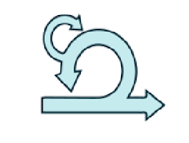
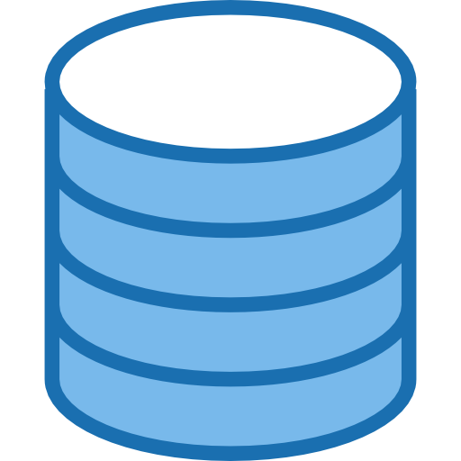
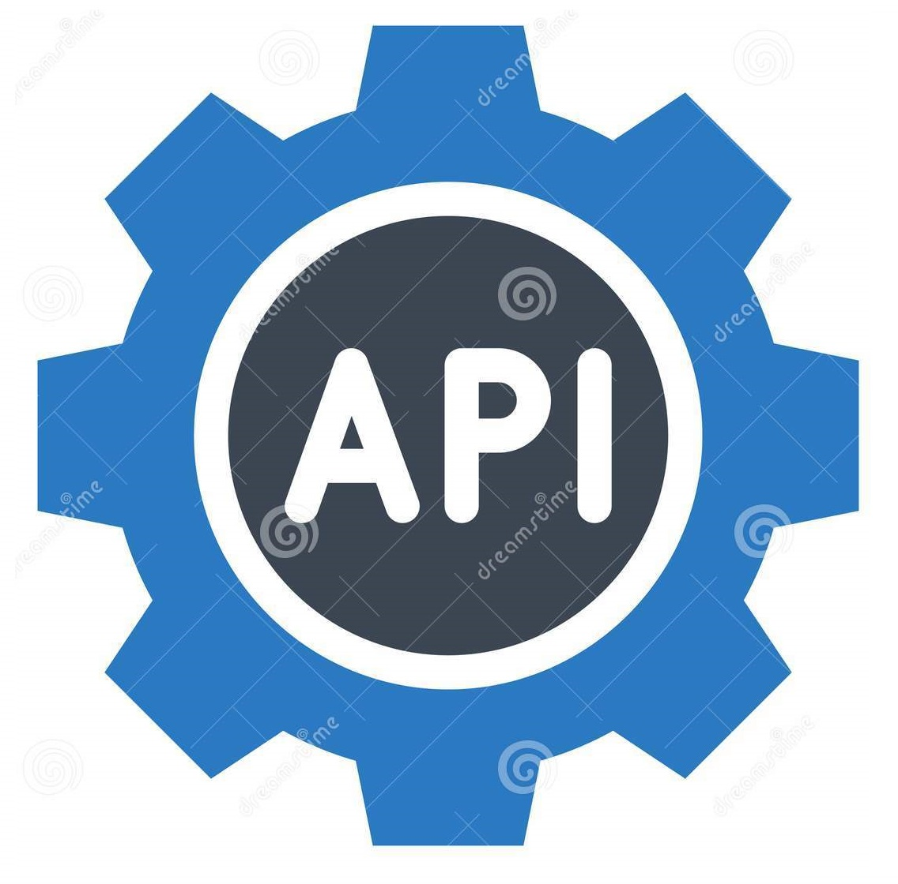

MVP (Producto Minimo Viable)
Se valida la solución ofrecida a los usuarios y esta debe ser de utilidad cumpliendo con los intereses y necesidades, optimizando los tiempos e inversiones. Ejemplo: Facebook y Google.
Metodologia SCRUN
Todo el proceso de desarrollo de Eventfeed se realizó bajo la metodología Scrum, iniciando por la definición de las funcionalidades esenciales que tendría el MVP,luego, se comenzaron las ventanas de tiempo y tareas del proyecto, con lo que se determinan el costo total, alcance y tiempo real del proyecto.

SEO Search (Engine Optimization)
Es posible debido a la implementación de la PWA y dentro de esto tenemos:
- Google Analytics: herramienta de medición de tráfico web.
- Hotjar: herramienta para la medición del comportamiento de los usuarios en la aplicación.
- Planificación de estructuras de URL.
- Planificación de palabras clave.
- Planificación de metadescripciones.
Se definieron las tecnologías con las cuales se iba a desarrollar la PWA y la estructura del MVP, las tecnologías utilizadas fueron:
Angular: para el desarrollo de la estructura Front-end.
Firebase: para el almacenamiento de bases de datos y el envío de notificaciones push.
Servidores: se utilizó Heroku para la distribución de la aplicación Front-end.
Luego del proceso de desarrollo que se llevó a cabo según la planificación web de los Sprint en el marco de trabajo Scrum, se fueron entregando secciones de software ya funcionales, validado por cliente, el proceso duró aproximadamente alrededor de 5 meses (sprints).
En este proceso la aplicación ya se encontraba operativa y el cliente pudo realizar pruebas internas y externas con su círculo de confianza para validar las funcionalidades de la aplicación, cumpliendo así, con las expectativas y necesidades para las cuales fue desarrollada.
Esta validación permitió al cliente conseguir patrocinio para crear una aplicación mucho más robusta, que permitiría agregar funcionalidades adicionales basadas en el feedback (retroalimentación) generado por los usuarios.
Se identificaron ciertas tecnologías no viables en el crecimiento del proyecto, como el almacenamiento de bases de datos y funciones de Firebase, debido a que firebase limitaba un poco la consulta de información e incrementaba un poco los costos del proyecto.
Por lo que se cambio el entorno de base de datos y del backend, a una solución que permitiera a Eventfeed, escalar las funcionalidades en un entorno un poco más ágil, se implementó el desarrollo de servicios en PHP con base de datos MySql, lo que permitió disminuir los costos manteniendo el rendimiento de la aplicación.

Tecnologías utilizadas en el desarrollo
- Entorno de desarrollo Angular
- Lenguajes de programación: HTML, CSS, Javascript
- PWA
- Firebase
- Google Maps

Metodologías y modelos implementados en el desarrollo

Bases de datos
- Firebase database: Para el MVP
- MySql: Para el producto actual

Protocolos
- REST: Desarrollo de servicios web REST
Se partió de la necesidad del cliente por abordar el tema de los eventos en Alemania, bajo esta premisa, se quiso abordar las diferentes maneras de adquirir las entradas a los eventos por cada ciudad. El diseño que se llevó a cabo bajo unos parámetros denominados Material Design “es un lenguaje que combina los principios innovadores de la tecnología con las normas clásicas del diseño”Se trata de entender cómo abordar la experiencia del usuario dentro de la interfaz, usando contenidos muy específicos y de una manera intuitiva, basado en el estudio de Google se trabajó bajo estas reglas de usuario.
Está basado en los parámetros de Material Design, para este caso en particular, se fue desarrollando de acuerdo a las reglas y parámetros ya establecidos según el estudio de Google; audiencias, entrevistas, usabilidad, data, etc.
Es un proceso de largas iteraciones, sin embargo, es un trabajo constante el cual no se define desde el diseñador sino desde la información que el usuario brinda o aporta desde esas iteraciones.
se basó en los lineamientos de marca y en la estética visual de la misma, partiendo de los colores, tipografía, formas y la estética, se trabajó bajo todas estas características.
se implementaron en la PWA: iconografía, colores de los botones, acciones, visual de los mapas, menú, etc. Son todos los componentes de la aplicación, los cuales logran diferenciar la marca frente a sus competidores